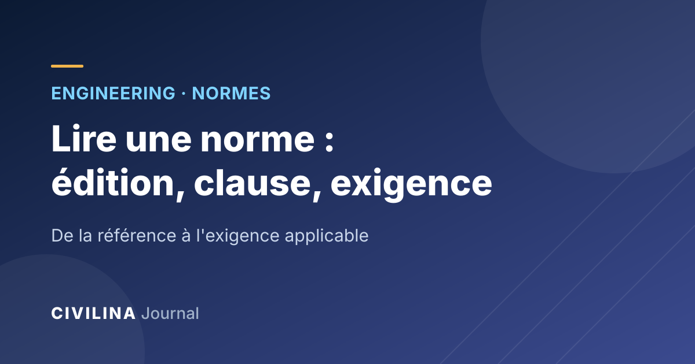

Accueil › Journal › Lire une norme
Engineering · NormesLire une norme : édition, clause et exigence applicable

« Selon la norme » : la formule revient dans tous les cahiers des charges, les ITP et les PV. Mais quelle norme, dans quelle édition, quelle clause, et surtout quelle exigence exactement ? Une norme se lit avec méthode. Voici comment passer d'une référence à une exigence que l'on peut appliquer, contrôler et prouver sur son projet.
Identifier la référence et l'édition
La référence d'une norme se lit comme une adresse. Elle indique l'organisme qui l'a publiée, son numéro, éventuellement sa partie, et sa date de publication. Quelques repères :
| Élément | Ce qu'il indique |
|---|---|
| Préfixe | L'organisme : ISO pour une norme internationale, EN pour une norme européenne, un sigle national lorsqu'un pays publie ou reprend une norme |
| Numéro et partie | Le document lui-même ; une même norme peut compter plusieurs parties, chacune avec son propre contenu |
| Année ou date | L'édition ; deux éditions d'une même norme peuvent contenir des exigences différentes |
| Amendements et corrigenda | Les modifications publiées après l'édition ; elles font partie du texte applicable si elles sont retenues |
| Annexe nationale | Pour certaines normes européennes, les choix laissés à chaque pays ; elle peut changer des valeurs |
Une référence sans édition est incomplète. Dans un ITP, un PV ou une note de calcul, la norme doit toujours être citée avec son édition, et avec ses amendements ou son annexe nationale lorsqu'ils s'appliquent.
Comprendre la structure d'une norme
La plupart des normes suivent une organisation semblable. Savoir où chercher fait gagner un temps considérable :
- L'avant-propos : qui a préparé la norme, ce qu'elle remplace, les principales modifications par rapport à l'édition précédente.
- Le domaine d'application : ce que la norme couvre et ce qu'elle exclut. C'est la première chose à lire : une norme appliquée hors de son domaine ne prouve rien.
- Les références normatives : les autres documents indispensables à son application.
- Les termes et définitions : le sens précis des mots employés, parfois différent du langage courant.
- Le corps du texte : les articles numérotés, qui contiennent les exigences.
- Les annexes, dites normatives lorsqu'elles font partie des exigences, ou informatives lorsqu'elles donnent seulement des explications ou des exemples.
Exigence, recommandation, permission : le sens des verbes
Dans une norme, les verbes ne sont pas choisis au hasard. Les règles de rédaction des normes internationales donnent à chaque forme un sens précis :
| Forme | Sens | Conséquence |
|---|---|---|
| « doit » | Exigence | À respecter pour se déclarer conforme à la norme |
| « il convient de » | Recommandation | Conseillé ; s'en écarter demande une justification |
| « peut » (permission) | Option permise | Autorisé, sans obligation |
| « peut », « est possible » (capacité) | Possibilité | Constat, pas une règle |
Autre point essentiel : les notes et les exemples placés dans le texte sont informatifs. Ils aident à comprendre, mais ils ne contiennent pas d'exigence. Une valeur trouvée dans une note n'a pas la même portée qu'une valeur fixée dans un article ou un tableau normatif.
Références datées et non datées
Lorsqu'une norme renvoie à une autre, la forme du renvoi compte :
- une référence datée (avec l'année) renvoie à cette édition précise, et seulement à elle ;
- une référence non datée renvoie en principe à la dernière édition du document cité, y compris ses amendements.
Sur un projet de plusieurs années, une référence non datée peut donc changer de contenu en cours de route. C'est l'une des raisons pour lesquelles les documents du marché doivent figer les éditions applicables, et pourquoi un changement d'édition doit être géré comme une décision de projet.
De la clause à l'exigence applicable
Une clause contient souvent plusieurs exigences, des conditions et des renvois. Pour l'appliquer et la contrôler, il faut la décomposer en exigences atomiques, c'est-à-dire en énoncés que l'on peut vérifier un par un. Pour chacune, on note :
- l'objet : sur quoi porte l'exigence ;
- la condition de validité : dans quel cas elle s'applique (type d'ouvrage, classe de matériau, environnement) ;
- le paramètre à respecter, avec son unité et sa tolérance si elles existent ;
- la source exacte : norme, édition, article, tableau, annexe nationale éventuelle ;
- la décision d'applicabilité pour le projet : applicable, non applicable ou à confirmer, avec la personne qui l'a prise.
C'est cette exigence décomposée, et non la norme entière, qui alimente une ligne d'ITP, un critère d'acceptation et, au bout de la chaîne, un PV d'inspection.
Exemple commenté sur une clause fictive
Pour illustrer la méthode sans reproduire une norme réelle, prenons une clause inventée, écrite dans le style habituel :
Décomposée, elle donne :
| Énoncé | Nature | Ce qu'il faut pour l'appliquer |
|---|---|---|
| Épaisseur selon le Tableau 7.4 | Exigence (« doit ») | La classe d'environnement de chaque élément, définie dans les documents du projet ; la valeur lue dans le tableau de l'édition applicable |
| Marge d'exécution | Recommandation (« il convient ») | Une décision du projet : retenir ou non une marge, et laquelle, avec justification |
| Valeurs plus élevées possibles | Note informative | Aucune obligation ; une simple information pour le concepteur |
On voit qu'une seule phrase « selon la norme » cache en réalité une donnée d'entrée du projet, une valeur tabulée, une décision à prendre et une information sans portée obligatoire. Tant que ces éléments ne sont pas séparés, le critère d'acceptation n'est pas vraiment défini.
Quand deux textes semblent se contredire
Sur un projet, plusieurs documents peuvent fixer des exigences sur le même sujet : la spécification du marché, une norme de produit, une norme d'exécution, un document technique réglementaire. Lorsqu'ils semblent diverger, quelques réflexes évitent les erreurs :
- vérifier l'ordre de priorité prévu par les documents du marché, qui le précisent généralement ;
- vérifier les éditions : l'écart vient souvent de deux éditions différentes d'un même texte ;
- vérifier les domaines d'application : deux textes qui semblent contradictoires visent parfois des cas différents ;
- ne pas trancher seul lorsque l'écart touche la sécurité ou la durabilité : la question est posée au concepteur ou au maître d'œuvre, et la réponse est écrite.
Une incertitude documentée vaut toujours mieux qu'une valeur choisie au hasard entre deux textes.
Les normes et le droit d'auteur
Les normes sont des documents protégés, vendus par les organismes de normalisation ou diffusés sous licence. Leur texte ne doit pas circuler librement en copie. En pratique :
- l'entreprise acquiert les normes dont elle a besoin, ou y accède par un abonnement ;
- les documents internes (ITP, PV, procédures) citent la référence, l'édition et l'article, sans recopier le texte ;
- une base normative utile aide à retrouver la bonne référence et la bonne clause, mais renvoie au document officiel pour le texte.
Les erreurs fréquentes
- Citer une norme sans son édition, ou sans son annexe nationale lorsqu'elle s'applique.
- Appliquer une norme hors de son domaine d'application.
- Traiter une recommandation ou une note comme une exigence, ou l'inverse.
- Reprendre une valeur d'une ancienne édition sans vérifier qu'elle a été conservée.
- Écrire « selon la norme » comme critère d'acceptation.
- Faire circuler des copies de normes au lieu de citer leurs références.
Checklist de lecture
- La référence complète est notée : organisme, numéro, partie, édition.
- Les amendements, corrigenda et l'annexe nationale applicables sont identifiés.
- L'édition retenue correspond aux documents du marché, ou la décision est écrite.
- Le domaine d'application couvre bien l'ouvrage concerné.
- Les termes importants sont vérifiés dans les définitions.
- Exigences, recommandations et notes sont distinguées.
- Chaque exigence utile est décomposée : objet, condition, paramètre, unité, tolérance, source.
- La décision d'applicabilité est datée et attribuée à une personne compétente.
Lire une norme avec méthode prend un peu plus de temps au départ. C'est ce temps qui évite les critères flous, les contrôles contestés et les réserves de dernière minute.
- Directives ISO/IEC, Partie 2 — Principes et règles de structure et de rédaction des documents ISO et IEC (formes verbales, éléments normatifs et informatifs).
- Documents du marché : liste des normes et éditions applicables au projet.
La clause présentée dans cet article est fictive et sert uniquement à illustrer la méthode. Pour toute application, consultez l'édition officielle des normes auprès de leur éditeur.
Retrouver la bonne exigence plus vite ?
La base normative de CIVILINA Engineering organise les références par domaine, ouvrage, édition et clause, pour que vos ingénieurs partent de l'exigence applicable.
Découvrir la base normative →